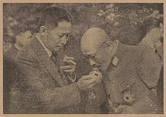

|
j
a v a s c r i p t |
June 19, 1944

Aquino during Gratitude
Mission to Japan last May I saw BENIGNO AQUINO the great, daring to walk the 100 meters or so up Arlegui from his new home (ex-German Consulate's). Only two men accompanied him, but at the end of the line a batch of Constabulary stood guarding a house, so he was safe. His bodyguards had pistols, as did several more guarding the entrance to his house. When the time comes these are the men he'll have to watch out for. Meanwhile Aquino has money to burn and the boys need it. It was ten minutes to 0800, and Schaer's truck happened to slow down to let out a passenger, so I got a good look at Aquino as I stood on the back bumper. He saw me looking too. I found, surprisingly, that I had to control myself from blurting out, "You damn b...!" But what I enjoyed was his demeanor. He always looks the same: an air of forced importance mingled with flashes of fear and mischievousness reflecting his true character — of jumping on and off each bandwagon as often as fortunes change. The fear is new — he knows he's in too deep and the quicksilver of his own over-ambitiousness is drawing him ever more-and-more into the snares of his greatest folly. He realizes the die is cast, and the fear shows in his knitted brows and sharp, ever-alert, flashing eyes. He may well be asking himself if his time is due sooner or later, and at whose (assassin's) hands. In the meantime, the air of importance is something more than the pure article since it is mingled with an attempt at nonchalant BRAVADO. . . . . Schaer bought a rubber gadget for his hydraulic brakes — cost him P150 second hand. A new one pre-war cost 60 centavos. An 18-liter tin of alcohol in the black market costs P150, and the quality is so poor that his 60-h.p. one-tonner Panel Truck gets only 3-kilometers a liter! Money is at 10:1, and rice is now P28 a ganta — well over P600 a sack and dragging the price of all other staples up. There is no rice ration for anyone, including government workers... unless you work for the Japanese or a firm working for them — and they get P4 up plus 600 grams of rice a day. And yet some choose to leave their jobs due to Japanese methods of tough and indiscriminate retaliation for perceived sabotage or robberies. ...ooOoo... |
|
|
|
|